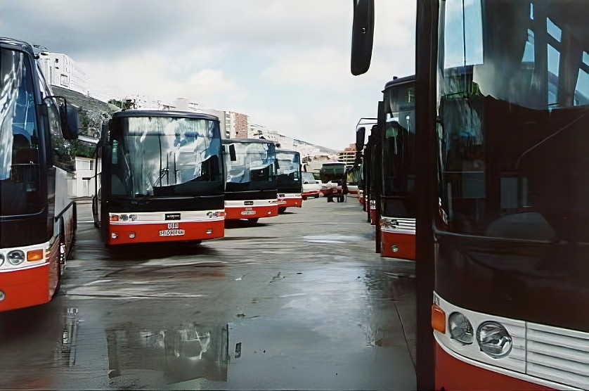
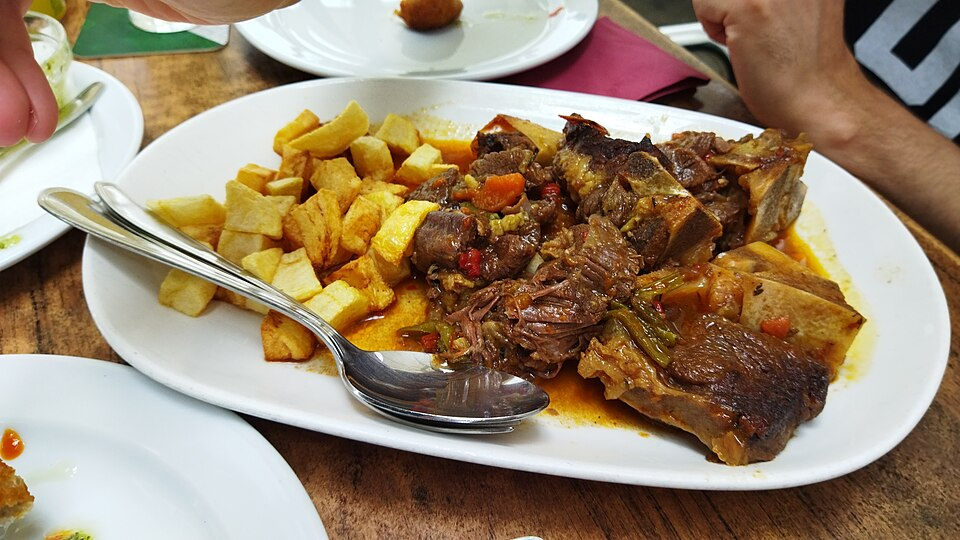
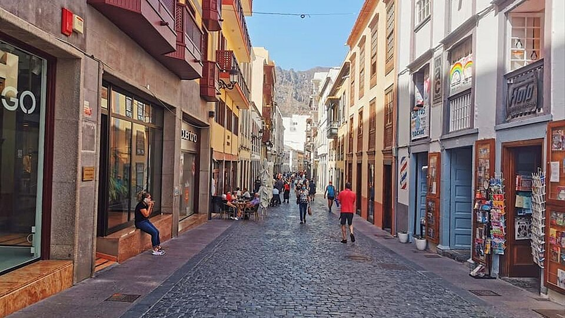

· Destacada
La guía propone tres formas de descubrir el oeste
Una selección editorial conecta paisaje, gastronomía y planes para preparar una primera visita.
Noticias semanales · 9–15 de noviembre de 2026
Ideas, paisajes y propuestas para preparar una visita al oeste de La Palma.

· Destacada
Una selección editorial conecta paisaje, gastronomía y planes para preparar una primera visita.

Un recorrido divulgativo presenta productos y costumbres gastronómicas de la isla.

Consejos generales sobre la luz, el respeto al entorno y la selección de lugares.